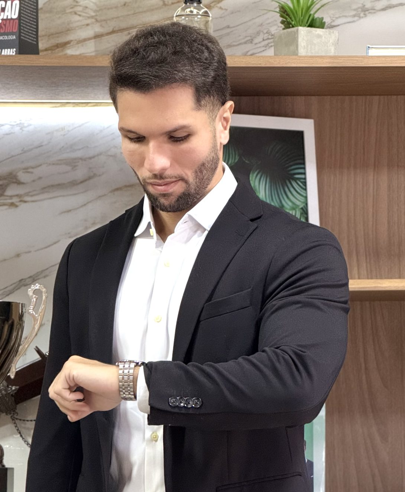
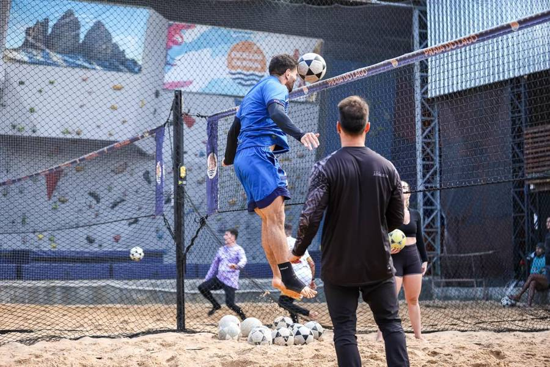
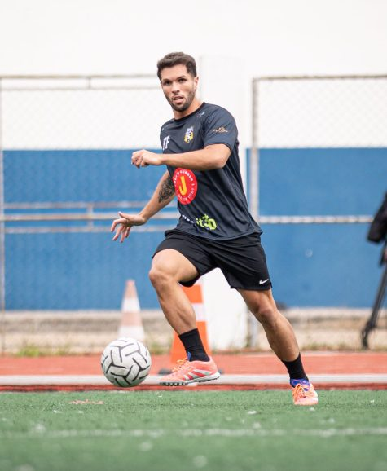
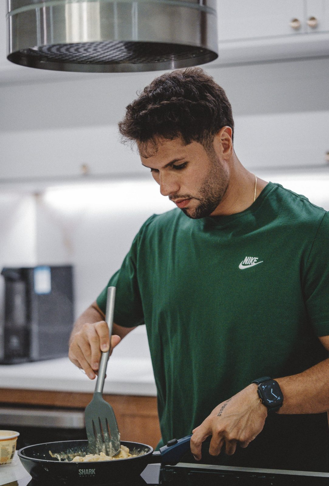

Aqui você não recebe uma dieta genérica. Juntos, vamos montar a melhor dieta do SEU mundo — considerando seus objetivos, rotina, preferências alimentares, contexto socioeconômico e genética.
Agendar consulta
São mais de 16 horas semanais entre futevôlei, futebol, musculação e jiu-jitsu. A nutrição que eu prescrevo é a mesma ciência que aplico na minha própria rotina de atleta — recuperação, hidratação, suplementação e performance testadas dentro e fora do consultório.



Cinco frentes de atendimento, todas com rigor científico: um plano feito para a sua vida real.
Atleta amador ou competitivo? Nutrição para treino, recuperação, hidratação e suplementação com base científica — prescrita por quem também compete.
Ganho de massa muscular: cálculo preciso de calorias e proteína, ajuste fino da dieta ao treino e suplementação com evidência (creatina, beta-alanina, whey).
Cansado de dietas restritivas que terminam em efeito rebote? Método baseado em ciência e adaptado à sua rotina — para emagrecer sem sofrimento.
Para você que busca mais energia, melhor sono, exames em dia e uma relação saudável com a comida.
Acompanhamento trimestral da sua dieta, com ajustes contínuos conforme a sua evolução nas reavaliações.

Etapa qualitativa — sua história, rotina, preferências alimentares e objetivos. É aqui que a individualização começa.
Etapa quantitativa — avaliação da composição corporal (bioimpedância InBody + dobras cutâneas) e do seu gasto energético.
Prescrição no mesmo dia — você sai da consulta (~70 minutos) com seu planejamento alimentar personalizado em mãos.
Avaliação completa + planejamento alimentar personalizado entregue no mesmo dia.
Quero começarReavaliação da composição corporal e ajuste fino do plano conforme sua evolução.
Agendar retornoAcompanhamento semanal com personal trainer + nutricionista: toda semana um treino e uma dieta novos, ajustados à sua evolução. Saiba mais →
Quero performanceExame avulso na clínica, sem precisar de consulta: análise completa da composição corporal com interpretação dos resultados. Saiba mais →
Agendar exame💡 Não trabalho diretamente com convênio, mas forneço o recibo para você solicitar o reembolso. Na maioria dos casos o processo é digital e leva em média 2 semanas.
Agora é a sua vez: vamos montar a melhor dieta do SEU mundo. Atendimento presencial em Guarulhos ou online, com prescrição no mesmo dia.